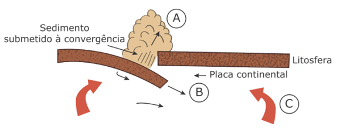
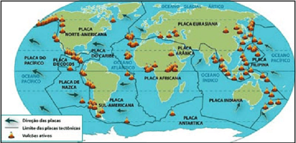
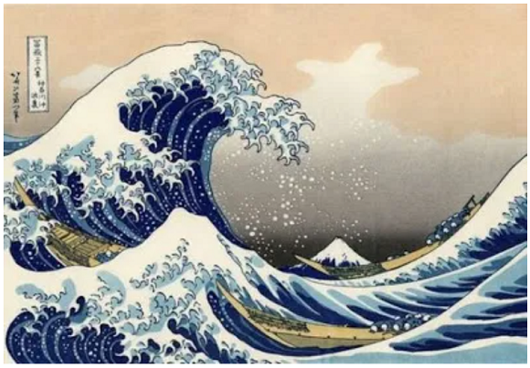

Conteúdo: Conteúdo: Relevo, Tectonismo, Epirogênese, Orogênese, vulcanismo, Magma, lava, Gêiseres, Hipocentro, Epicentro.
Objetivo: Objetivo: Entender o papel das forças internas na configuração das estruturas e formas de relevo terrestre.
Questão 01
(UFU 2018) O vulcão Shinmoedake, localizado na ilha japonesa de Kyushu, está ativo e lança fumaça a até 3 mil metros de altura. A Agência Meteorológica do Japão está alertando as pessoas a ficarem longe da montanha de 1.421 metros e advertindo que grandes rochas podem ser cuspidas até uma distância de 3 quilômetros.
(Disponível em: https://g1.globo.com/mundo /noticia/vulcao-shinmoedake-entra-em-erupcao-no-japao.ghtml Acesso em: 14 de mar, 2017).
A ocorrência no Japão do fenômeno geológico apresentado está relacionada principalmente à
a) existência no seu território de áreas cratônicas.
b) sua localização numa área de encontro de placas tectônicas.
c) grande incidência de rochas magmáticas no interior do país.
d) formação geológica antiga de suas ilhas.
Comentário:
a) Incorreta. Os crátons são áreas diferenciadas da litosfera caracterizadas pela alta resistência mecânica e longa estabilidade. Elas são formadas por rochas ígneas e metamórficas ou recobertas por rochas sedimentares.
b) Correta. O Japão está localizado entre uma área de intensa atividade tectônica, no encontro das placas Euroasiática, Pacífico e das Filipinas. A maioria de seus vulcões têm origem vulcânica, isto é, material magmático é expulsa pelas fendas dessas placas e podem trazer grande destruição com violentas erupções.
c) Incorretas. As rochas magmáticas são aquelas formadas pelo resfriamento e solidificação do magma, o qual pode ser solidificado no interior da crosta ou extravasado para a superfície.
d) Incorreta. A formação de uma ilha (porção de terras emersas cercadas de água por todos os lados) já consolidada é uma consequência da atividade tectônica e não uma causa para abalos sísmicos. O vulcão está relacionado com um processo recente da atividade tectônica, por isso há vulcões ativos, adormecidos, em processo de extinção ou já extintos.
Questão 02
(UFRGS 2010) A figura a seguir representa processos associados à tectônica de placas

Fonte: CASSETI, Valter. Elementos de geomorfologia. Goiânia, UFG, 1994.
Identifique os processos destacados pelas letras A, B e C, respectivamente.
a) orogenia – subducção – movimentos convectivos.
b) orogenia – erosão – subducção.
c) dobramentos modernos – orogenia – movimentos convectivos.
d) erosão – subducção – dobramentos modernos.
e) dobramentos modernos – erosão – subducção.
Na figura representada, a letra “A” indica o movimento horizontal e de compressão da crosta terrestre e do relevo, caracterizando a orogenia, que, ao contrário da epirogenia, acontece em áreas instáveis, tal qual a da imagem. A colisão entre as placas promove a formação de dobramentos, cordilheiras ou fossas. É uma área marcada por atividades sísmicas e pela presença intensa de vulcões.
Na letra “B”, observa-se o movimento de subducção da placa tectônica mais densa, que mergulha no magma do manto superior nos limites convergentes. A subducção ocorre ao longo de amplas zonas de subducção que no presente se concentram nas costas do oceano Pacífico, no chamado Anel de Fogo do Pacífico, mas também há zonas de subducção em partes do mar Mediterrâneo, das Antilhas, das Antilhas do Sul e na costa índica da Indonésia.
Já na letra “C” estão representadas as células ou correntes de convecção, principal causador do movimento das placas tectônicas. AS correntes de convecção envolvem um mecanismo interno do Planeta, sem interferência externa, devido a diferenças de densidade continas no fluído por conta das distintas temperaturas do manto. É um fluxo de transferência de calor onde o magma, mais quente torna-se menos denso e é conduzido para a superfície, enquanto o magma resfriado, mais denso, é direcionado para o fundo, renovando o ciclo da convecção.
Alternativa correta: letra A.
Questão 03
(ENEM 2017)
“O terremoto de 8,8 na escala Richter que atingiu a costa oeste do Chile, em fevereiro, provocou mudanças significativas no mapa da região. Segundo uma análise preliminar, toda a cidade de Concepción se deslocou pelo menos três metros para o oeste. Buenos Aires moveu-se cerca de 2,5 centímetros para oeste, enquanto Santiago, mais próxima do local do evento, deslocou-se quase 30 centímetros para o oeste-sudoeste. As cidades de Valparaíso, no Chile, e Mendoza, na Argentina, também tiveram suas posições alteradas significativamente (13,4 centímetros e 8,8 centímetros, respectivamente)”.
Revista InfoGNSS, Curitiba, ano 6, n. 31, 2010
No texto, destaca-se um tipo de evento geológico frequente em determinadas partes da superfície terrestre. Esses eventos estão concentrados em:

a) áreas vulcânicas, onde o material magmático se eleva, formando cordilheiras.
b) faixas costeiras, onde o assoalho oceânico recebe sedimentos, provocando tsunamis.
c) estreitas faixas de intensidade sísmica, no contato das placas tectônicas, próximas a dobramentos modernos.
d) escudos cristalinos, onde as rochas são submetidas aos processos de intemperismo, com alterações bruscas de temperatura.
e) áreas de bacias sedimentares antigas, localizadas no centro das placas tectônicas, em regiões conhecidas como pontos quentes.
a) Incorreta. Os terremotos surgem do acúmulo de tensão entre placas tectônicas e a área de vulcões são formadas a partir desse processo e não o contrário. Os vulcões se formam pela dobra da placa, portanto, são uma consequência da dinâmica das placas.
b) Incorreta. Os tsunamis são formados a partir do movimento tectônico na crosta oceânica que abruptamente soergue e se rebaixa liberando grande energia capaz de provocar a ascensão da água que chega nas faixas costeiras em formas de grandes ondas.
c) Correta. Os terremotos ocorrem nas bordas das placas tectônicas devido ao acúmulo de tensão entre elas, principalmente no chamado “Anel de Fogo” no Oceano Pacífico. A maioria dos terremotos estão localizados em uma zona de falhas, próximas a dobramentos modernos como a Cordilheira dos Andes, que é resultado do choque entre a Placa de Nazca e a Sul-Americana na costa Oeste do continente americano, citada na questão.
d) Incorreta. As áreas cratônicas ou escudos cristalinos são porções da superfície terrestre onde há rochas antigas e com grande estabilidade geológica. As ações do intemperismo, do clima não são fatores cruciais para os terremotos.
e) Incorreta. As bacias sedimentares são depressões da superfície terrestre presentes no relevo formadas por abatimentos da litosfera, nas quais se depositam ou depositaram sedimentos e, em alguns casos, materiais vulcânicos. Os pontos quentes são locais no interior da crosta responsável pelo extravasamento o magma para a superfície e não está relacionada com as bacias sedimentares na formação de terremotos.
Questão 04
(FUVEST 2008) O vulcanismo é um dos processos da dinâmica terrestre que sempre encantou e amedrontou a humanidade, existindo diversos registros históricos referentes a esse processo. Sabe-se que as atividades vulcânicas trazem novos materiais para locais próximos à superfície terrestre.
A esse respeito, pode-se afirmar corretamente que o vulcanismo
a) é um dos poucos processos de liberação de energia interna que continuará ocorrendo indefinidamente na história evolutiva da Terra
b) é um fenômeno tipicamente terrestre, sem paralelo em outros planetas, pelo que se conhece atualmente.
c) traz para a atmosfera materiais nos estados líquido e gasoso, tendo em vista originarem-se de todas as camadas internas da Terra.
d) ocorre, quando aberturas na crosta aliviam a pressão interna, permitindo a ascensão de novos materiais e mudanças em seus estados físicos.
e) é o processo responsável pelo movimento das placas tectônicas, causando seu rompimento e o lançamento de materiais fluidos.
a) Incorreta. O Vulcanismo não ocorre indefinidamente, isto é, sem fim. O tempo de vida de um vulcão pode variar de alguns meses até milhões de anos. Há vulcões ativos com erupções, também vulcões adormecidos e outros extintos.
b) Incorreta. Existe ou existiu atividade vulcânica em outros Planetas ou satélites, como Marte, Vênus ou mesmo a Lua durante seu processo de formação.
c) Incorreta. O Vulcanismo não se origina de todas as camadas da Terra, mas sim da crosta terrestre e do manto.
d) Correta. As atividades vulcânicas, como os terremotos e as cadeias de montanhas estão ligados aos processos internos da Terra, abaixo da superfície devido ao calor intenso presente no Manto. O Vulcanismo é a expressão mais evidente desse processo pois traz rocha derretida das profundezas da crosta terrestre ou do manto através de erupções representada pelas lavas.
e) Incorreta. O processo responsável pelo movimento das placas tectônicas diz respeito as correntes de convecção geradas no Manto terrestre devido as diferenças de temperatura existente no magma.
Questão 05
(IFRR 2018) O vulcanismo é um fenômeno natural importante, que acontece na crosta terrestre e principalmente no fundo dos oceanos, que cobrem 2/3 da superfície de nosso planeta, totalmente formados de lavas, onde também encontramos a mais colossal cadeia montanhosa com cerca de 70000 Km de comprimento. Um vulcão constantemente expelindo lava escaldante pode parecer amedrontador. Apesar de assustador, o vulcanismo teve papel determinante nos primórdios da formação geológica de nosso globo e continua atuante no processo de modelagem do relevo terrestre.
Sobre a importância desse fenômeno, são verdadeiras as seguintes alternativas, exceto:
a) é responsável pelo aparecimento de novas terras e na subsistência de milhares de pessoas que vivem e cultivam as ricas terras de seus arredores.
b) a emissão de pedra vulcânica é grande suprimento de substituição de carvão mineral, fonte de matéria prima para as indústrias petroquímicas dos países altamente industrializados.
c) movimenta a economia de ilhas como a do Havaí e garante emprego e renda para a população local através do turismo.
d) a poeira e as cinzas vulcânicas, tornam os solos bem mais férteis, para o desenvolvimento do setor agrário.
e) proveem grande riquezas de jazidas metalíferas como as de cobre, zinco, magnésio, chumbo, mercúrio e outros, das quais a humanidade usufrui.
a) Correta.
b) Incorreta. A pedra vulcânica, ou seja, um fragmento de rocha que saiu de uma erupção vulcânica é formado por um conjunto de minerais, sólido e inorgânico. Já o carvão mineral é um combustível fóssil originado pela decomposição de matéria orgânica (restos de árvores, plantas) acumulado em camadas, preferencialmente, em bacias sedimentares por milhões de anos. O carvão mineral é queimado para gerar energia, principalmente, nas usinas termelétricas.
c) Correta.
d) Correta.
e) Correta.
Questão 06
(UNIVALE) Observe a imagem:

Uma das 33 gravuras da série Fuji, elaboradas entre 1823 e 1829, mostra um tsunami.
Assinale a alternativa verdadeira sobre a formação de um tsunami semelhante ao que atingiu o sudeste asiático no final de 2004:
a) A origem do fenômeno está associada a eventos de ordem tectônica.
b) A formação de tufões acentuados e áreas de alta pressão atmosférica geram tal fenômeno.
c) A formação de tsunamis está, necessariamente, associada ao fundo coralígeno do Oceano Índico.
d) O efeito do aquecimento global é o principal responsável pela ocorrência acima do normal desse tipo de tsunami nos últimos anos.
e) O derretimento de geleiras na região do Oceano Índico é o responsável pelo fenômeno indicado na gravura.
a) Correta. O Tsunami do Oceano Índico de 2004 foi provocado por uma ruptura na zona de subducção entre a placa tectônica da Índia que mergulha por baixo da placa da Birmânia. O maremoto teve magnitude em cerca de 8,9 na Escala Richter e provocou uma série de tsunamis que atingiu desde países da Indonésia, Índia, África do Sul, o que causou a morte de mais de 220 mil pessoas em 14 países, além de milhões de desabrigados.
b) Incorreta. Um Tufão é um ciclone tropical, isto é, uma grande perturbação na atmosfera terrestre e ocorre sobretudo no hemisfério norte. Áreas de altas pressões são aquelas que resultam da descida do ar frio e não tem relação com a origem do Tsunami.
c) Incorreta. O fundo coralígeno, ou seja, que dá origem aos corais não tem relação de causa com Tsunamis.
d) Incorreta. O termo aquecimento global como a expressão do aumento da temperatura média dos oceanos e da atmosfera terrestre, seja por causas naturais ou atividades humanas não tem relação com a ruptura das placas tectônica no fundo dos oceanos.
e) Incorreta. As geleiras são grandes massas de gelo que ano após ano tendem a fluir para baixo sob seu próprio peso e não possui relação direta com a formação de tsunamis.
Questão 07
(ENEM 2012)
“De repente, sente-se uma vibração que aumenta rapidamente; lustres balançam, objetos se movem sozinhos e somos invadidos pela estranha sensação de medo do imprevisto. Segundos parecem horas, poucos minutos são uma eternidade. Estamos sentindo os efeitos de um terremoto, um tipo de abalo sísmico”.
ASSAD, L. Os (não tão) imperceptíveis movimentos da Terra. ComCiência: Revista Eletrônica de Jornalismo Científico, n.º 117, abr. 2010. Disponível em: http://comciencia.br. Acesso em: 2 mar. 2012.
O fenômeno físico descrito no texto afeta intensamente as populações que ocupam espaços próximos às áreas de:
a) alívio da tensão geológica.
b) desgaste da erosão superficial.
c) atuação do intemperismo químico.
d) formação de aquíferos profundos.
e) acúmulo de depósitos sedimentares.
a) Correta. Os terremotos ocorrem pela liberação da energia acumulada, parte dessa energia é transmitida através das rochas como vibrações chamadas de ondas sísmicas, que chegam à superfície provocando inúmeros desastres. A maioria dos terremotos são gerados pelo movimento ao longo de falhas no contato entre placas.
b) Incorreta. O desgaste provocado pela erosão provoca movimentos de massa com deslocamento de toneladas de material rochoso nas encostas. Porém seu poder de destruição não é equivalente ao dos terremotos.
c) Incorreta. O intemperismo químico altera e decompõe rochas e minerais, principalmente pelas reações químicas envolvendo água. Esse processo não tem energia de uma ruptura de placas tectônicas.
d) Incorreta. A formação de aquíferos profundos tem relação com o desgaste de rochas como o calcário na formação de cavernas e o teto dessas podem entrar em colapso e provocar desmoronamentos. Entretanto não tem a mesmo causa dos terremotos relacionados a forças tectônicas.
e) Incorreta. Os depósitos sedimentares têm origem com o desgaste das rochas já existentes e de seu acúmulo em uma bacia sedimentar. AS rochas sedimentares são mais suscetíveis para formarem dobras devido sua elasticidade ou mesmo desabar devido a gravidade nas encostas. Entretanto a origem desses fenômenos não tem relação direta com o tectonismo.
Questão 08
(UCS) O tectonismo é definido como um movimento lento e prolongado da crosta terrestre, resultante da movimentação do magma pastoso. Observe a figura abaixo
Formação causada pelo tectonismo. Fonte: A TERRA. 5. ed. São Paulo: Ática, 1997. p.15. Formação causada pelo tectonismo
Assinale a alternativa que indica o tipo de formação representado na figura
a) Movimento resultante das forças internas horizontais, conhecido como epirogênese.
b) Formação de Horst, encontrada nas fossas tectônicas localizadas no fundo dos oceanos.
c) Resultado do movimento de compressão lateral sofrida por uma determinada área de rochas não resistentes, o qual recebe o nome de dobras.
d) Deslocamento de blocos provocado pelo choque de placas tectônicas, ocasionando a formação de estruturas falhadas, conhecidas como Graben.
e) Soerguimento de uma falha por meio de pressões internas verticais, o que resulta em blocos montanhosos, como, por exemplo, a formação da Cordilheira dos Andes.
a) Incorreta. O movimento horizontal no qual as rochas são comprimidas por pressão extrema é chamado de orogênese.
b) Incorreta. O Horst é formado quando um bloco se eleva verticalmente em comparação com seus blocos vizinhos.
c) Correta. As rochas literalmente dobram quando são lentamente comprimidas por forças da crosta terrestre. As dobras podem ocorrer em qualquer configuração tectônica, mas é mais comum ao longo das fronteiras das placas convergentes.
d) Incorreta. O termo Graben designa um bloco rochoso que ficou afundado em relação ao seu entorno. Trata-se de uma falha que pode ocorrer após um terremoto e constitui um movimento vertical da crosta.
e) Incorreta. O movimento ilustrado pela figura indica um processo horizontal da crosta e não vertical. A Cordilheira dos Anges é um clássico exemplo da Orogenia quando uma placa oceânica em subducção entra por cima uma da outra.
Questão 09
(2020) Os terremotos de grande magnitude e intensidade ocorrem principalmente em locais onde há o encontro de diferentes placas tectônicas. Essas áreas são denominadas:
a) Zonas de divergência.
b) Epicentro.
c) Deriva continental.
d) Zonas de convergência.
e) Escala Richter.
a) Incorreta. Nas zonas de divergência as placas se afastam uma das outras.
b) Incorreta. É ponto geográfico na superfície terrestre diretamente sobre o foco do terremoto, ou seja, o local que é mais atingido com as ondas sísmicas.
c) Incorreta. Deriva continental diz respeito a comprovação de que grandes proporções dos continentes do globo estão em movimento baseados em dados geológicos e fósseis em locais oposto do Atlântico.
d) Correta. Nas áreas ou limites convergentes as placas tectônicas juntam-se e são marcadas por fossas profundas, cinturões de terremotos, montanhas e vulcões.
e) Incorreta. A escala Richter é utilizada para determinar o tamanho de um terremoto associando os sismos a uma faixa numérica.
Questão 10
(UERR 2018) As forças que criam e alteram as formas de relevo podem agir no interior da Terra (agentes internos) ou na superfície terrestre (agentes externos). São agentes internos do relevo: o tectonismo, o vulcanismo e os abalos sísmicos.
I. O tectonismo ou diastrofismo compreende todos os movimentos que deslocam e deformam as rochas que constituem a crosta terrestre. Manifesta-se por movimentos epirogênicos ou orogênicos.
II. Vulcanismo é um fenômeno geológico que ocorre do interior da Terra para a superfície, quando há o extravasamento do magma em forma de lava, além de gases e fumaça.
III. Abalos sísmicos são causados pela ruptura das rochas nas camadas exógenas da crosta, ou pela movimentação das placas tectônicas, que produzem ondas vibratórias que se espalham em várias direções, originando os sismos.
Sobre os agentes internos, estão corretos os itens:
a) I, II e III.
b) I e III apenas.
c) II e III apenas.
d) I e II apenas.
e) Apenas o item II está correto.
I – Correta.
II – Correta.
III – Incorreta. Os abalos sísmicos ou terremotos tem origem nas camadas endógenas ou internas do relevo.